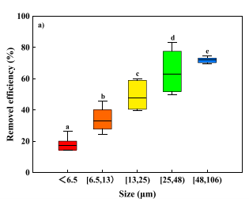

Microplastics are tiny pieces of plastic which are less than 5mm in length, which can potentially be found in drinking water.
Although not much is known about the effect that microplastics can have on human health, it is very well known that microplastics
can cause damage to the internal structures of aquatic life and can even potentially be fatal to them, so it is important to remove
them from drinking water to prevent any potential harm that can be caused to humans.
However, there are ways to remove these microplastics, for example when there are optimized operating conditions over 70% of
microplastics under 13 µm, or another way to remove microplastics is through water treatment plants, where primary treatment can remove
16.5% to 98.4% of microplastics and secondary treatments can remove 78.1% to 100% of microplastics and tertiary treatments can remove 87.3%
to over 99.9% of microplastics in the water.
Introduction
Microplastics are generally characterised as water-insoluble, solid polymer particles that are under 5mm in size (NOAA, 2024).
Many studies have been done on microplastics and their presence within freshwater and drinking water,
with many studies finding anywhere between 10^-2 to 10^8 microplastics per m^3 (Peter Marsden, 2019). These large numbers can be very worrying as although not much is known about the effect that microplastics can have on humans,
and there is some debate about whether microplastics have any effect on humans at all, what is well known about is the effect they have on fish and other aquatic species.
Microplastics are extremely dangerous for fish and aquatic species because they damage the internal structures of them and this damage in some cases can even kill the animal.
This damaging effect that these microplastics have on wildlife have caused scientists to try and come up with methods of removing them from sources of water in order to prevent any negative effects on health they may have and to help
protect the wildlife that may inhabit these sources of water. Methods that have been studied to remove microplastics include coagulation mechanisms and water treatment plants, both of these processes have been used to remove
microplastics from drinking water and both of these processes have their own individual efficiencies and drawbacks when it comes to treating drinking water and this article looks to better understand the benefits and downsides of both.
Analysis
One method of removing the microplastics from water is by using coagulation mechanisms to remove them from the water, coagulation in water treatment is a chemical process in which certain compounds are added into the water which clump
together with small flocs to form larger flocs which are easier to remove, a floc is a small mass that is suspended within a liquid. One study that attempted to see the effect of using coagulation agents decided to use poly aluminium
chloride (PAC) as a coagulation agent, and solutions of 1mol/L of HCL and 1mol/L of NaOH was used to regulate the pH levels of the water sample. The study found that the larger microplastics were a lot easier to remove, with a removal
efficiency of around 71% for microplastics around 48µm and 106µm, when compared to much smaller microplastics, for example microplastics under 6.5 µm were found to have a removal efficiency of around 16%, which is considerably less than
the 71% for the larger microplastics. (S. Tang et al. 2023)

When it came to the difference in microplastics removal efficiency in varying pH of water it was found that higher pH also resulted in higher removal efficiency of microplastics, in a water sample of pH 5, the removal efficiency of microplastics was only 5%,
whereas in the water sample that had a pH of 10, the removal efficiency of microplastics was found to be around 50%. This tells us that higher pH of water is a favourable condition when trying to remove microplastics. (S. Tang et al. 2023).
Another process which removes microplastics from water is setting up a water treatment plant to treat the water and remove any sludge, microplastics or any other contaminants that may be in the water. In water treatment plants the water being treated goes
through multiple different treatments in order to thoroughly clean the water, it will go through a primary treatment, a secondary treatment and in some cases the water may even go through an extra tertiary treatment in there is any secondary effluent
(effluent is wastewater) (K.H.D. Tang and T. Hadibarata, 2021). Some studies, like the one done by Carr et al. (2016) found that in the skimming and settling done in the primary treatment as well as the secondary treatment, can remove over 99.9% of the
microplastics in the water. This is due to the fact that the microplastics that have lower densities will float to the top, which will therefore allow them to be easily skimmed off the top (K.H.D. Tang and T. Hadibarata, 2021).
However, this also caused
there to be some secondary effluent to be produced in the secondary treatment, Carr et al. (2016) reported that there was 0.0007 microplastics per litre of secondary effluent, whereas Ziajahromi et al. (2017) reported an average
of 0.48 microplastics per litre, this is when tertiary water treatment is used, which consists of filters, such as sand filters or gravity filters to remove any suspended solids, tertiary treatments have been found to remove
anywhere between 87.3% to over 99.9% of microplastics in the water (K.H.D. Tang and T. Hadibarata, 2021). Despite these treatments being great at removing microplastics with in the water, during the settlement of these treatments
there is a sludge that forms, which can be sent to landfill, or be burnt to generate energy, or be used in agriculture, however this sludge traps a lot of microplastics within itself, which will therefore mean that there is still
a lot of microplastic pollution in the environment. (K.H.D. Tang and T. Hadibarata, 2021).
Conclusion:
In conclusion there are many ways to remove microplastics in water and this paper outlines a couple of them and shows that they each have their advantages and disadvantages,
for example we can see that water treatment plants can remove a lot more microplastics then just coagulation mechanisms, however the water treatment plants also create a lot of excess sludge,
which can also cause microplastic pollution within the environment, this tells us that more research is needed on the topic of removing microplastics in water to find a solution that is both the most effective and the most environmentally friendly.
References
NOAA. (2024) What are microplastics. Available at: https://oceanservice.noaa.gov/facts/microplastics.html (Accessed: 3rd December 2024)
Marsden, P. (2019) Microplastics in freshwaters and drinking water: Critical review and
assessment of data quality Available at: https://doi.org/10.1016/j.watres.2019.02.054 (Accessed: 30th October 2024)
S. Tang et al. (2023) The coagulation behavior and removal efficiency of microplastics in
drinking water treatment Available at: https://doi.org/10.1016/j.jwpe.2023.103885 (Accessed: 30th October 2024)
K.H.D. Tang and T. Hadibarata, (2021) Microplastics removal through water treatment plants: Its feasibility, efficiency, future prospects and enhancement by proper waste management Available at: https://doi.org/10.1016/j.envc.2021.100264 (Accessed: 30th October 2024)